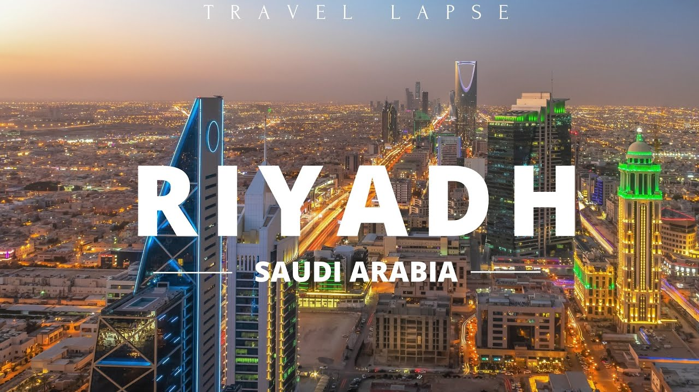
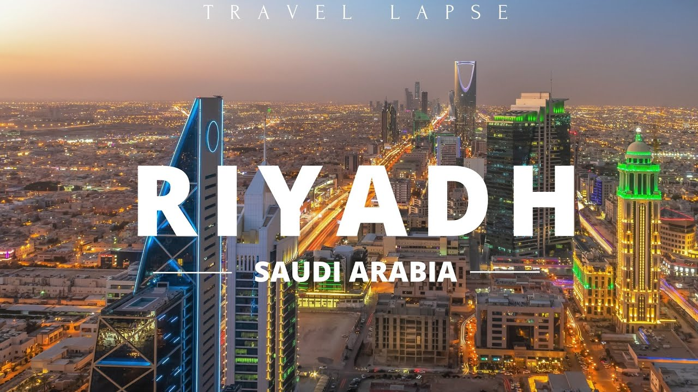

Why To Visit Saudi Arabia
Saudi Arabia is a country of rich history, breathtaking landscapes, and deep cultural heritage. From the ancient city of AlUla and the stunning Red Sea coastline to the modern skyline of Riyadh, every region offers a unique experience. Visitors can explore UNESCO World Heritage sites, enjoy traditional Arabian hospitality, and witness the fascinating blend of old and new that makes Saudi Arabia an unforgettable destination.
Top Attractions to Visit in Saudi Arabia:
- 🏜️ AlUla (Hegra) – Explore stunning sandstone formations and ancient Nabatean tombs at Saudi Arabia’s first UNESCO World Heritage site.
- 🕋 Makkah (Mecca) – The holiest city in Islam, visited by millions of pilgrims each year.
- 🏙️ Riyadh – The modern capital, home to the Kingdom Tower, National Museum, and Diriyah heritage area.
- 🌊 Jeddah – A coastal city known for its beautiful Corniche, Red Sea diving spots, and old town Al-Balad.
- 🏄 Red Sea Project – A growing luxury tourism area with islands, coral reefs, and pristine beaches.
- 🏞️ Edge of the World (Jebel Fihrayn) – A dramatic desert cliff near Riyadh offering breathtaking views.
- ⛰️ Abha (Asir Mountains) – A cooler mountain city surrounded by misty hills and green landscapes.
- 🏰 Diriyah – The birthplace of the Saudi state, filled with restored mud-brick architecture and culture.
- 🌵 Empty Quarter (Rub’ al Khali) – The largest sand desert in the world — a vast and mesmerizing natural wonder.